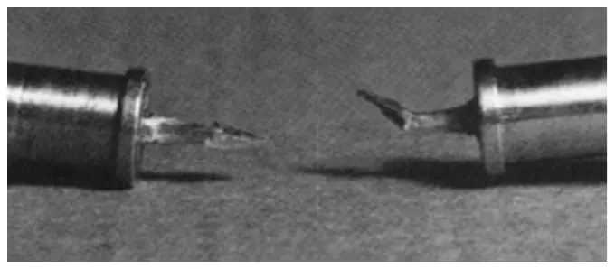

نسخه استخراجشده؛ ترجمه یا تأیید علمی انجام نشده است. وضعیت: captured
سرنگ فلزی قدیمی بخش را برداشتهای. هر بار که حلقهی شست را برای آسپیراسیون عقب میکشی، هارپون از لاستیک پیستون بیرون میآید، حتی با کشیدن آرام. ایراد از کجاست و چه باید کرد؟
سرنگ فلزی و پلاستیکی قابل استفادهی مجدد، با نگهداری درست، مدتها کار میکنند:
هارپون برای کار طولانی ساخته شده، ولی با گذشت زمان کُند میشود و دیگر در لاستیک پیستون فرو نمیماند. هارپون کند را تمیز و تیز کن یا عوض کن؛ پیستون و هارپون یدکی ارزان و در دسترس است. محل اتصال سوزن هم جداشدنی است؛ مراقب باش همراه سوزن دور ریخته نشود.
اشتباه رایج: هر وقت خونی نیامد، حلقه را محکمتر کشیدن. یک حرکت خیلی آرام رو به عقب برای آسپیراسیون کافی است؛ کشیدن زیاد فقط هارپون را از لاستیک بیرون میکشد.
